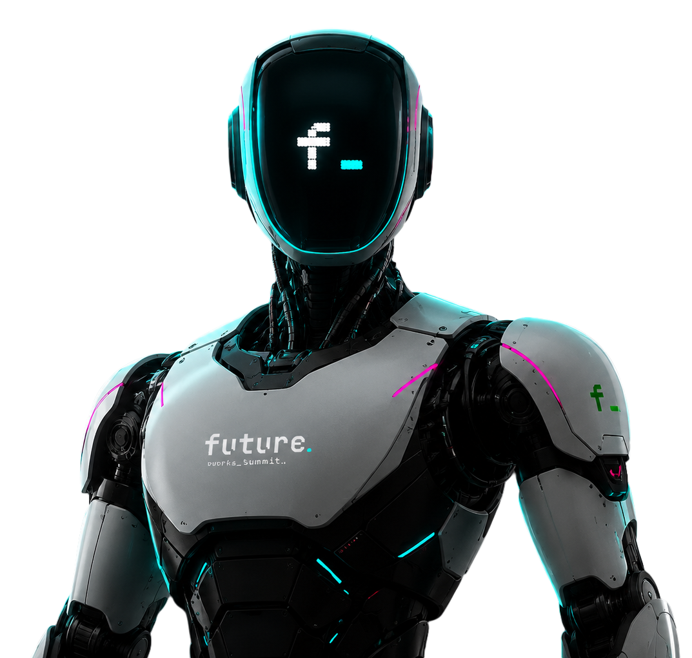
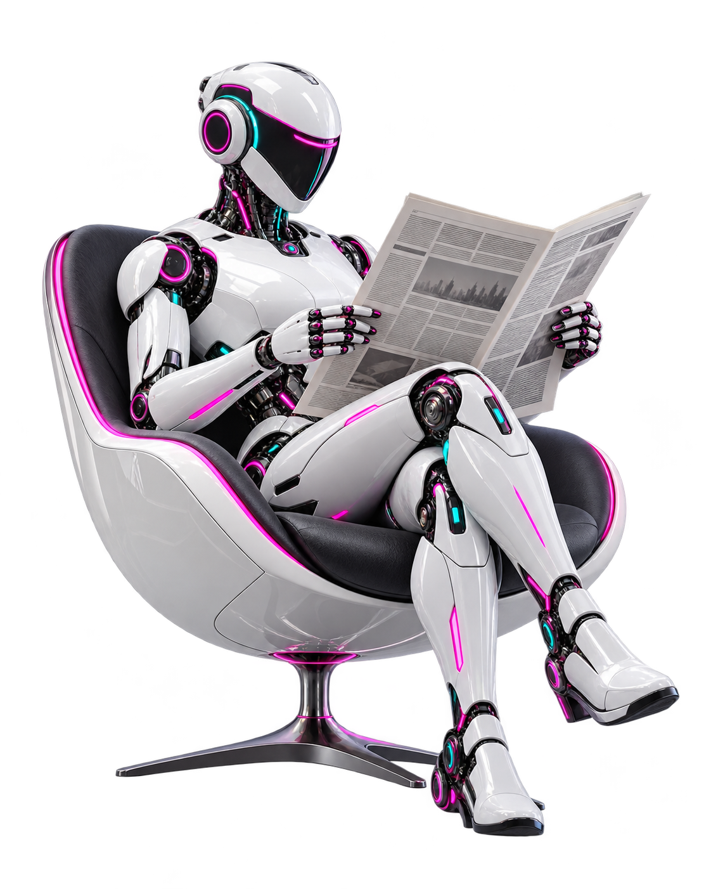

Palestras
Conteúdo atual, visão de mercado e discussões sobre o futuro do trabalho.
Uma experiência imersiva para estudantes, profissionais, empresas e instituições de ensino que querem se preparar para as profissões do futuro.

O Future Works Summit foi pensado para aproximar pessoas, ideias e oportunidades. O evento combina demonstrações, talks, experiências imersivas e conexões com o universo da inovação de um jeito direto, atual e inspirador.
Mais do que assistir, a proposta é viver a experiência: conhecer ferramentas, interagir com novas linguagens e enxergar possibilidades reais de formação e atuação.
Conteúdo atual, visão de mercado e discussões sobre o futuro do trabalho.
Aprendizado prático com atividades guiadas e experiências hands-on.
Contato direto com automação, prototipagem e interações homem-máquina.
Aplicações reais, tendências e novas oportunidades ligadas à IA.
Profissões emergentes, novas competências e visão de carreira.
Trocas valiosas entre estudantes, profissionais, marcas e instituições.

Do primeiro contato com a tecnologia às conexões que abrem caminhos. Escolha por onde começar.
Ambientes pensados para ativar curiosidade, repertório e conexão com o universo tech.
Conteúdos e conversas que ajudam a entender profissões, ferramentas e trajetórias do agora.

Um encontro para quem quer se preparar para as profissões do futuro, ampliar repertório e descobrir novas possibilidades.
Centro Olímpico e Paralímpico, Parque da Vaquejada. Um evento gratuito para quem quer conhecer de perto o futuro do trabalho.
Conheça as novidades, os anúncios e a programação do encontro. Siga o perfil oficial e acompanhe o que vem por aí.
Abrir Instagram oficial ↗